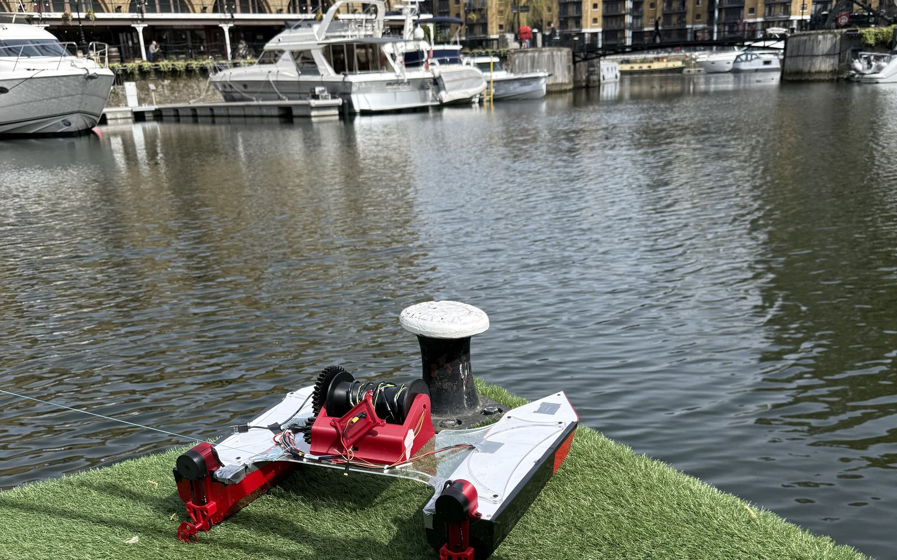

Your research
Your research area, the measurements you care about, and any instruments we could validate our sensors against.

Whether you can offer expertise, hardware or a place to test, we'd like to hear from you. Email either founder directly.
A few details up front help us work out quickly how we could work together.
Your research area, the measurements you care about, and any instruments we could validate our sensors against.
What you could provide, such as components, fabrication, mentorship or funding, and how you'd like to be recognized.
Where it is, what access looks like, and what you'd most want to learn from a survey.
Anything we haven't covered, ask us directly. We read every email.
V1 was built in one semester and water-tested at St Katharine Docks, London. V2 was a prototype whose flaws led to a full redesign. V3's carrier and pod boards are laid out and checked, the new hull is in CAD, and board fabrication, firmware and field trials come next. See the roadmap.
We're looking for funding, a mentor with experience in marine robotics, environmental monitoring or water quality, and places to get parts made, like PCBs and machined metal parts. Test sites help too. See what we need.
Watch V1 on the water, plan a route in the V1 waypoint planner, or run a simulated survey in the V2 command center.
pH, dissolved oxygen, TDS, turbidity and temperature at the surface, from the sensor pod, plus water depth from a fish-finder sonar. The platform is modular, so the payload can be configured for each application. See the spec sheet.
The Port of Oakland and the Charles River Watershed Association both told us their teams still collect sediment samples by sending divers down. Further down the line, we want a robotic arm on deck to collect water and sediment samples so nobody has to go in. The arm's joints are in development now. See where the platform is heading.
Kyle Tran and Matthew Hong, Mechanical Engineering students at Northeastern University. We design, build and test every part of D.R.E.A.M.S ourselves.